MASMON · KIKI
 ききのマスモン
ききのマスモン
🐾 マスモン⚔ 編成🃏 デッキ💗 好き・苦手

ごろべえ 先頭ゴーレム ・ Lv.26 3枠📈 攻撃型(ちからに振る)

おちゃばプラント ・ Lv.15 3枠📈 防御型

しずくウンディーネ ・ Lv.13 3枠📈 ガッツ型
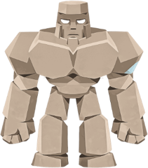
→🎨 ききがごろべえを染めた。左が元の色。染め方はプレイヤーと同じ。
🔁 育成・再生・染色はききの中だけ。
縦: 🐾 マスモン。
MASMON · KIKI
ききのマスモン
🐾 マスモン⚔ 編成🃏 デッキ💗 好き・苦手
先頭ごろべえLv.26 ・ 攻撃型
ごろべえLv.26 ・ 攻撃型おちゃばLv.15 ・ 防御型しずくLv.13 ・ ガッツ型⚔ 編成はききが決める。
横: ⚔ 編成(先頭+2体)。
DECK · KIKI
ききのデッキ
🐾 マスモン⚔ 編成🃏 デッキ💗 好き・苦手
🃏 ずっしり火力 ・ 守って耐えて、
MFバトルカードのカード(マスモンとは別もの)。
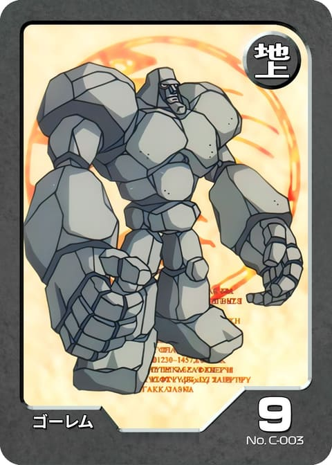
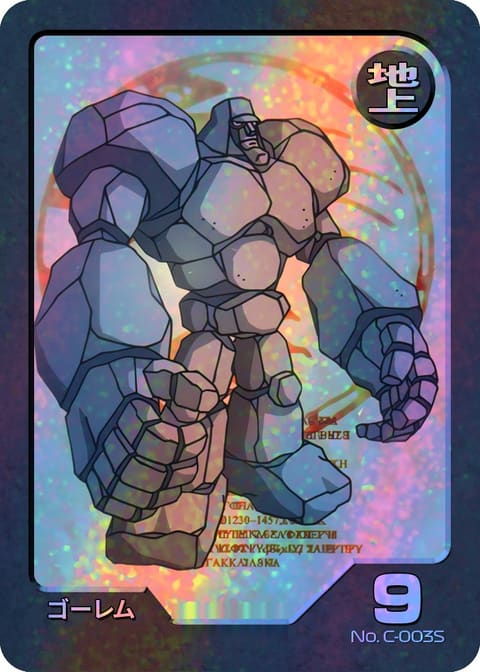
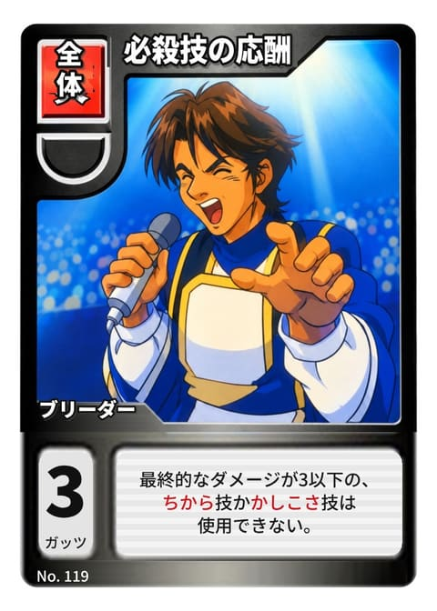
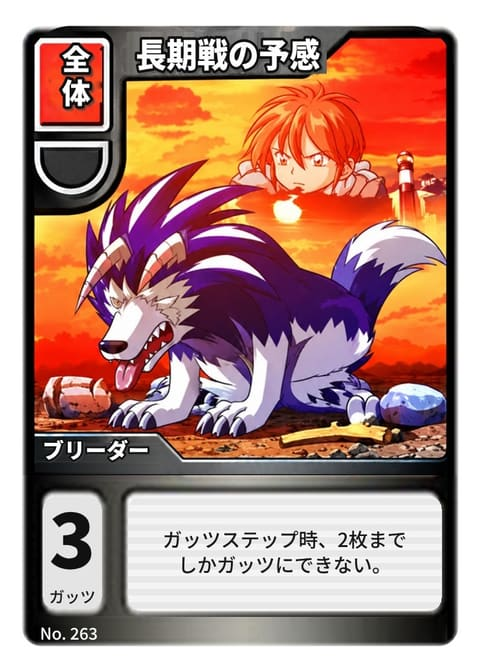
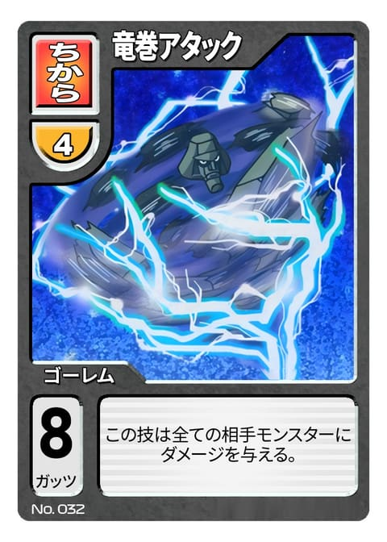
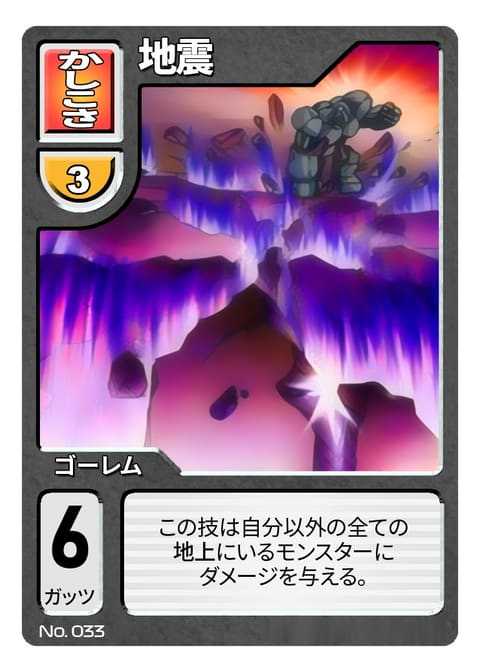
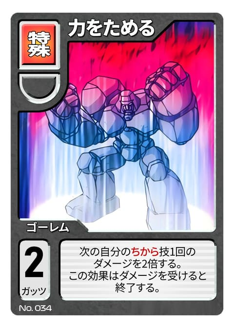
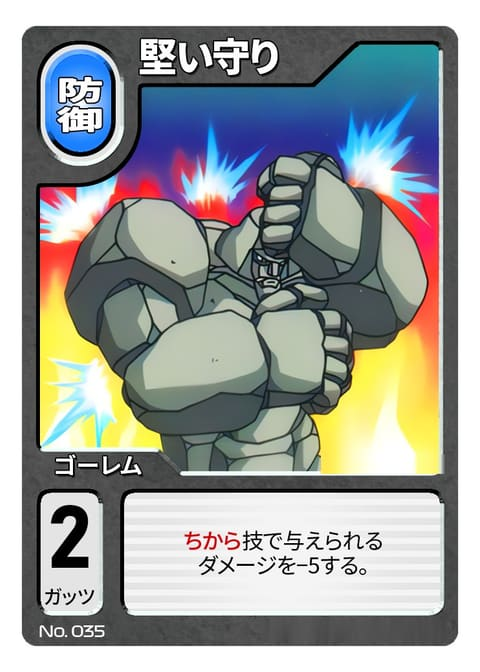
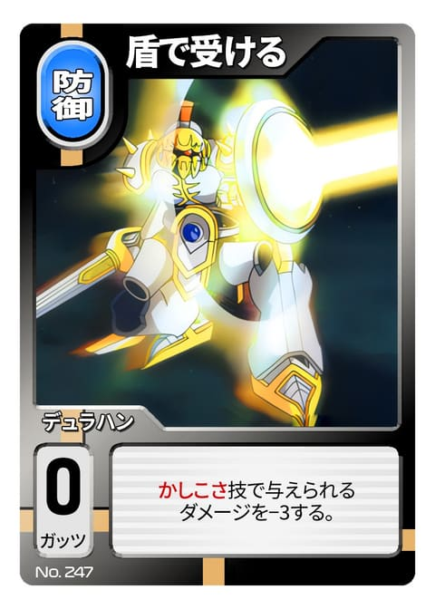
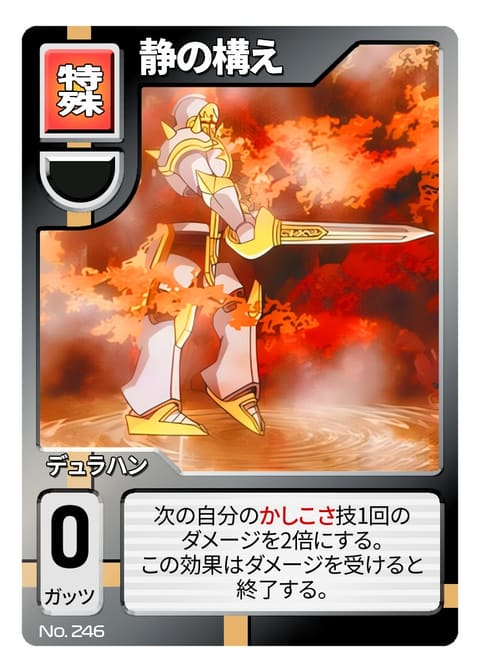
🔄横: 縦の端末で、